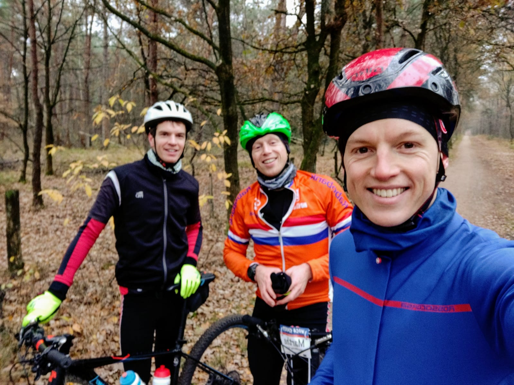
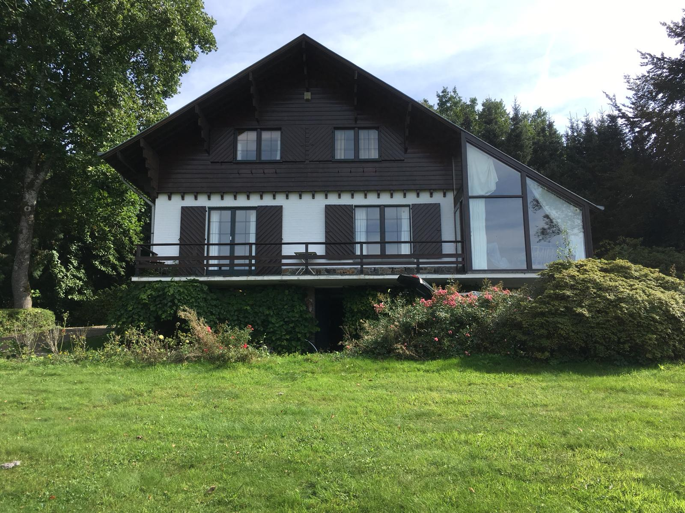
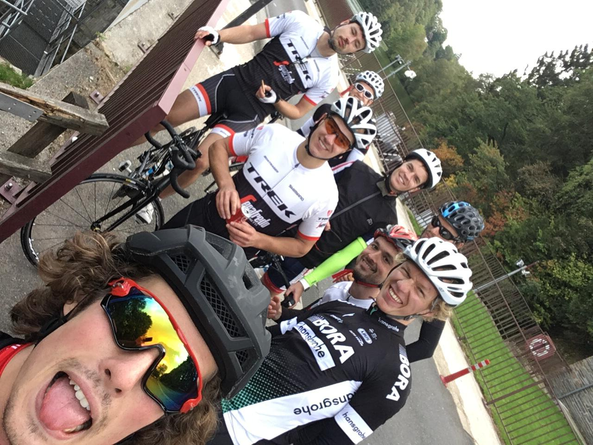
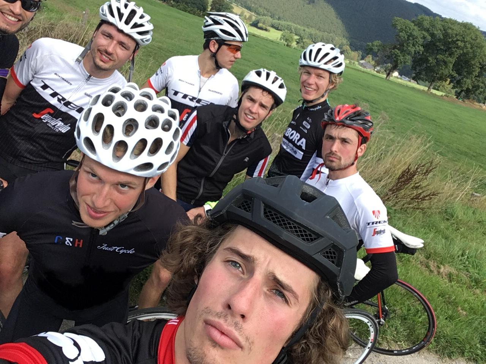
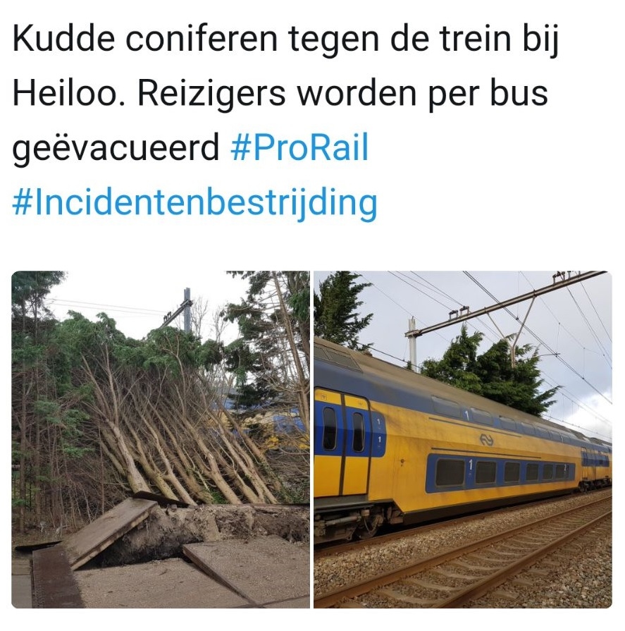
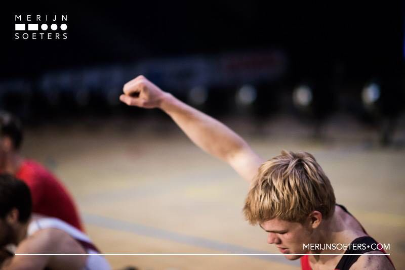

Scroll voor de laatste nieuwtjes naar beneden. Zet vooral de lichte pikken borrel van 15 december in de agenda en de derde vrijdag van januari natuurlijk!
Het LPD komt er al weer bijna aan. Zorg dat je je outfit op orde hebt. Met je Oudlicht shirt onder je jasje en een OL flacon in je binnenzak ben je goed voorbereid! Flacons kunnen al 15 december overhandigd worden.
Handig tijdens de wintersport!?
Limited edition Oudlicht heupflaconBen je het ook zat om tijdens het Lichtepikkendinner
met een literfles whiskey in je binnenzak te staan?
Heb je ook altijd zo'n dorst na de weging?

Je kan nu je bidoncollectie aanvullen met deze classy heupflacon met Oudlicht lasergravure.
Voor maar €13.- is deze exclusieve gadget in jouw bezit.
Stuur een mailtje of vul onderstaande formulier in voor rekeningnummer
of overige vragen en maak het geld over. Dan heb je tijdens de wintersport een gevulde binnenzak.
Let op: Op-is-op.
Afgemat door de oude garde

Hij hoort het je liever niet zeggen maar je vraagt het je toch af. Hoe kan het dat hij zo snel is terwijl zijn roei-jaren zo ver achter hem liggen.
Als je aan het huilen bent in het wiel van zijn mountainbike, dan zit je goed. Een realistischer scenario is dat je na 100 meter al moederziel alleen de single track aan het volgen bent over de Utrechtse heuvelrug en hoopt dat er zo snel mogelijk een T-splitsing komt waar er even gewacht wordt.
Al met al zijn dit toch de uitjes waarbij je terug denkt aan de jaren dat je als een fitte lichte pik elke ochtend op kon staat en je lijf meer aan kon dan je dacht. Het leven is soms minder mooi maar dat maakt een uitstapje naar de heuvelrug niet minder leuk. 's Ochtends vroeg de trein pakken en door een frisse wind een parcours (of drie) afleggen en halverwege een verdiend stuk worteltaart met koffie. Dan droom je niet meer van een broodje pindakaas tussen de trainingen door op Uilenstede.
Hij hoort het je liever niet zeggen maar je vraagt het je toch af. Hoe kan het dat hij zo snel is terwijl zijn roei-jaren zo ver achter hem liggen.
Als je aan het huilen bent in het wiel van zijn mountainbike, dan zit je goed. Een realistischer scenario is dat je na 100 meter al moederziel alleen de single track aan het volgen bent over de Utrechtse heuvelrug en hoopt dat er zo snel mogelijk een T-splitsing komt waar er even gewacht wordt.
Al met al zijn dit toch de uitjes waarbij je terug denkt aan de jaren dat je als een fitte lichte pik elke ochtend op kon staat en je lijf meer aan kon dan je dacht. Het leven is soms minder mooi maar dat maakt een uitstapje naar de heuvelrug niet minder leuk. 's Ochtends vroeg de trein pakken en door een frisse wind een parcours (of drie) afleggen en halverwege een verdiend stuk worteltaart met koffie. Dan droom je niet meer van een broodje pindakaas tussen de trainingen door op Uilenstede.
NKIR resultaten
Obbe wordt Nederlands kampioen in een zeer rappe 6.14, David trekt zich naar 6.26.
Eeehm, ja. Zucht. De rode generaal trekt aan het langste end. Op een seconde gevolgt door draaiende maaiende Ewout. Rutger, praatjes vullen geen gaatjes, tijdens 6min42 was je wel wat stil. @car, 6:46. Lars, mooi dat je hebt ingewogen, we zien je graag de derde vrijdag van januari.
Eeehm, ja. Zucht. De rode generaal trekt aan het langste end. Op een seconde gevolgt door draaiende maaiende Ewout. Rutger, praatjes vullen geen gaatjes, tijdens 6min42 was je wel wat stil. @car, 6:46. Lars, mooi dat je hebt ingewogen, we zien je graag de derde vrijdag van januari.
Obbe domineert Hel
Tijdens de Hel van het Noorden wist Obbe zich het snelst van iedereen, hij won de race over 6k net als vorig jaar. Waar in eerdere edities Lennart dit ook wel eens wist klaar te spelen, roeide Obbe dit jaar met 41 seconde voorsprong naar het Blik. David werd netjes 3e.
Huisje zoek op Oudlichtfietsvakantie

Tijdens de Oudlicht fietsvakantie vertoefde een groep vederlichte fitte lichte pikken in een luxueze villa in de Ardennen. Dit schitterende huis was omgeven door een hondertal coniferen. Ondanks het plotten van de route bleek het onmogelijk om dag in dag uit het huisje terug te vinden. Voor sommigen zat er niets anders op dan weer terug te fietsen naar Maastricht.
Tijdens de Oudlicht fietsvakantie vertoefde een groep vederlichte fitte lichte pikken in een luxueze villa in de Ardennen. Dit schitterende huis was omgeven door een hondertal coniferen. Ondanks het plotten van de route bleek het onmogelijk om dag in dag uit het huisje terug te vinden. Voor sommigen zat er niets anders op dan weer terug te fietsen naar Maastricht.


KHB 2018

30 juni en 1 juli vond de KHB plaats op de bosbaan. De zaterdag bracht al moois. David Kampman en Gyaan Damion Eigenberg gingen in het LM2x veld van start. Zinnend op een uitzending naar het SB-WK in Poznan, Polen, hoopten de mannen op een het kunnen aanscherpen van hun PR en een sterke race. Helaas had moeder natuur net wat andere plannen; door een sterke tegenwind waren alle tijden op de bosbaan aanzienlijk langzamer dan op de ARB. Ondanks dat de weersomstandigheden wat minder waren, wisten David en Damion wel weer als eerste over de streep te komen met een dikke 8 seconden voorsprong op de nummer 2 en het 2e blik van de dag voor Skøll binnen te slepen. Dat niet alleen, maar de heren werden ook Nederlands Kampioen in de LM2x, dus dubbel gefeliciteerd! Leuke vermelding is de Amstel/Skøll-combi met Gijs Andringa die voor de leuk even was ingestapt en een zeer verdienstelijke 4e plaats heeft weten te behalen.
Daarnaast trad de 4- aan in het development klassement.
Aan het einde van de zondag een LM8+ op het water. Deze jongens wapperden na een gemiste en gehaal weegpartij als laatste de finish over tegen landen als Hong Kong (provincie?) en Indonesie.
De middag werd afgesloten met de traditionele OL bbq onder de boom bij de finish.

Bericht aan de bezoekers
Wij moeten u tot onze grote spijt meedelen dat er tijdens het Lichtdiner veel is misgegaan, en willen u hiervan graag op de hoogte stellen. Het betreft grote fouten die op de avond van negentien januari aan de deur zijn gemaakt. Wij nemen hier alle verantwoordelijkheid voor. Nadat de vooringang enige tijd door de organisatie bemand was is er nagelaten de voordeur onder constant toezicht te houden, waardoor het controleren van de gastenlijst niet voldoende is gebeurd. Dit heeft grote gevolgen gehad voor de rest van het diner, en wij zullen niet proberen goed te praten wat wij hadden kunnen, en moeten, voorkomen. Omdat wij transparant met u willen zijn volgt hier een grafische omschrijving van het voorgevallene.
Toen het diner zijn hoogtepunt van comfortabele gevoelens naderde en iedereen tevreden leek, zijn de organiserende leden in buitensporige mate opgegaan in de losse atmosfeer, en hebben zij de focus verloren. Hierdoor was het mogelijk dat, terwijl de gasten zich onder de uit hun heupflacons afkomstige verdovende walm veilig waanden, zevenentwintig ongenode gasten hun kans schoon roken en door de onbemande voordeur richting de eerste verdieping zijn geslopen. Nietsvermoedend stond het volk te borrelen, toen het werd overvallen door een glibberige bende, en in luttele seconden transformeerde dit zich tot een storm van zilveren glinsteringen. De indringers wierpen zich als ware kamikazevliegtuigen op de mensen, die allen intussen bewust waren van het gevaar. Dit bewustzijn mocht niet baten, want de vizieren stonden vanavond op scherp, en de bomen boden helaas niet voldoende beschutting voor de meer dan honderd aanwezigen.
De schade werd aan allen duidelijk toen de storm ging liggen. Vele gasten liepen letsel aan hun hoofd en schouders op, en mensen die door knie- en teenschade dit vermogen te lopen kwijt waren werden op lichte picknicktafels meegenomen. De gewonden stroomden de toiletten binnen waar de wonden met enkel water en toiletpapier werden verzorgd. Door deze rappe zelfhulp zijn fatale gevolgen gelukkig voorkomen, en de fysieke en emotionele littekens zijn slechts als een indicator van het geweld dat zich op deze avond heeft afgespeeld achtergebleven.
De sneaky motherfuckers hebben zich destijds in een laf vertoon tussen verwarmingen en achter de bar verscholen, en hebben daar tot wel dagenlang gelegen. Inmiddels is, tot ieders grote opluchting, de laatste overlevende indringer enkele dagen na het diner opgepakt, en we hebben goede hoop dat deze overwinning een waarschuwing aan allen die ons kwaad toewensen is geweest en genoeg is om dergelijke acties in de kiem te smoren. Dit is echter bij lange na niet genoeg voor ons om onszelf te kunnen vergeven. Vanwege de steken die wij hebben laten vallen, hebben wij besloten de functie van organisatie van het Lichtdiner permanent naast ons neer te leggen, en deze over te laten aan een nieuwe generatie.
Bedankt voor uw aandacht.
Licht ‘17
Wij moeten u tot onze grote spijt meedelen dat er tijdens het Lichtdiner veel is misgegaan, en willen u hiervan graag op de hoogte stellen. Het betreft grote fouten die op de avond van negentien januari aan de deur zijn gemaakt. Wij nemen hier alle verantwoordelijkheid voor. Nadat de vooringang enige tijd door de organisatie bemand was is er nagelaten de voordeur onder constant toezicht te houden, waardoor het controleren van de gastenlijst niet voldoende is gebeurd. Dit heeft grote gevolgen gehad voor de rest van het diner, en wij zullen niet proberen goed te praten wat wij hadden kunnen, en moeten, voorkomen. Omdat wij transparant met u willen zijn volgt hier een grafische omschrijving van het voorgevallene.
Toen het diner zijn hoogtepunt van comfortabele gevoelens naderde en iedereen tevreden leek, zijn de organiserende leden in buitensporige mate opgegaan in de losse atmosfeer, en hebben zij de focus verloren. Hierdoor was het mogelijk dat, terwijl de gasten zich onder de uit hun heupflacons afkomstige verdovende walm veilig waanden, zevenentwintig ongenode gasten hun kans schoon roken en door de onbemande voordeur richting de eerste verdieping zijn geslopen. Nietsvermoedend stond het volk te borrelen, toen het werd overvallen door een glibberige bende, en in luttele seconden transformeerde dit zich tot een storm van zilveren glinsteringen. De indringers wierpen zich als ware kamikazevliegtuigen op de mensen, die allen intussen bewust waren van het gevaar. Dit bewustzijn mocht niet baten, want de vizieren stonden vanavond op scherp, en de bomen boden helaas niet voldoende beschutting voor de meer dan honderd aanwezigen.
De schade werd aan allen duidelijk toen de storm ging liggen. Vele gasten liepen letsel aan hun hoofd en schouders op, en mensen die door knie- en teenschade dit vermogen te lopen kwijt waren werden op lichte picknicktafels meegenomen. De gewonden stroomden de toiletten binnen waar de wonden met enkel water en toiletpapier werden verzorgd. Door deze rappe zelfhulp zijn fatale gevolgen gelukkig voorkomen, en de fysieke en emotionele littekens zijn slechts als een indicator van het geweld dat zich op deze avond heeft afgespeeld achtergebleven.
De sneaky motherfuckers hebben zich destijds in een laf vertoon tussen verwarmingen en achter de bar verscholen, en hebben daar tot wel dagenlang gelegen. Inmiddels is, tot ieders grote opluchting, de laatste overlevende indringer enkele dagen na het diner opgepakt, en we hebben goede hoop dat deze overwinning een waarschuwing aan allen die ons kwaad toewensen is geweest en genoeg is om dergelijke acties in de kiem te smoren. Dit is echter bij lange na niet genoeg voor ons om onszelf te kunnen vergeven. Vanwege de steken die wij hebben laten vallen, hebben wij besloten de functie van organisatie van het Lichtdiner permanent naast ons neer te leggen, en deze over te laten aan een nieuwe generatie.
Bedankt voor uw aandacht.
Licht ‘17
Noord-Holland bereidt zich voor op LPD
StB

Demonisatie LPD bereikt hoogtepunt
toekomst in gevaar?
Het Lichte Pikken Diner (LPD) van vorig jaar was een zwarte dag in de geschiedenis.In een poging deze duisternis iets te verlichten...
ging het bijna mis. Hing de toekomst van het LPD aan een zijden draadje? Lees hier hoe het ging


Handig tijdens de wintersport!?
Limited edition Oudlicht heupflaconBen je het ook zat om tijdens het Lichtepikkendinner
met een literfles whiskey in je binnenzak te staan?
Heb je ook altijd zo'n dorst na de weging?
Je kan nu je bidoncollectie aanvullen met deze classy heupflacon met Oudlicht lasergravure.
Voor maar €13.- is deze exclusieve gadget in jouw bezit.
Stuur een mailtje of vul onderstaande formulier in voor rekeningnummer
of overige vragen en maak het geld over. Dan heb je tijdens de wintersport een gevulde binnenzak.
Let op: Op-is-op.
Oer-Hollands kettingtrekken
Soceity-verslaggever Jim Hoffmann
11-12-2017
Na de recente schermutselingen op het water in Groningen was het afgelopen weekend tijd voor een Oer-Hollands potje kettingtrekken in ons aller Mokum. Waar de Hel voor Oudlicht bijzonder voorspoedig verliep met de snelste dagtijd voor Obbe, een puike zesde plek voor David en een gedeelde eerste plek voor Oud-Oudlichte pik Lennart (nog vaak met Lichtblauwe trui te bewonderen), is het binnenroeien in de Sporthallen Zuid toch net even andere koek.
Boordgroep
Namens de boordgroep van Oudlicht kwamen vijf heren in actie. Van hen wist Ewout de magische 06:40 grens te slechtten door een subtiele 06:39.6 op de klokken te zetten. Edgar en Luca hielden het even spannend, maar laatstgenoemde wist toch 1.6 seconden eerder over de virtuele finishlijn te komen. Dat lichte pikken tempo kunnen draaien werd laten zien door Koen, die misschien niet de snelste tijd wist te ergometeren maar dat wel in een soepele tempo 35 deed. Wat betreft Werner zijn race zullen we niet te diep in gaan op de gevaren tijd, wel graag aandacht voor onderstaand videofragment, een voorbeeld qua eindeloos doorzettingsvermogen en pit kunnen we zeker waarderen!
Scullgroep
De grote, jonge jongens van Oudlicht kwamen later op de dag in actie in het LSB-veld. David heeft wederom de zesde plek behaald, en met een race met knappe negatieve splits 06:30.5 weten te varen. Publiekslieveling is echter opnieuw Obbe geworden. Door van tevoren al getipt te zijn als kanshebber en zelf aan te hebben geven het Nederlands record aan te willen vallen waren de verwachtingen hooggespannen. Obbe heeft hier zeker aan weten te voldoen door op haast klinische wijze, op één-tiende van een seconde het Nederlands record te verbeteren: 06:15.5!
Inmiddels is het weer gewoon tijd voor gezelligheid, vrijdag LPB!
PS Kleine shout-out naar de Eerstejaars: 06:59.6, dat biedt volop perspectief
PPS Grote shout-out naar de fans, wij vonden het helemaal mooi
Hel van het Noorden
Zondag, 26-11-2017Obbe wint de LSB1x met de snelste tijd van de dag en een enorme voorsprong op de rest van het veld. David eindigt 10e.
En omdat we Lennart nog niet vergeten zijn en hij wel een hele stoere foto heeft laten maken na winst in de H1x:

Nieuwe collectie Oudlichtshirts
Bestel nu!

Vul onderstaande formulier in om je te verzekeren van het nieuwe Oudlichtshirt.
Voor €13,50 heb je het shirt in je bezit en steun je het Oudlichtfonds. Ook stickers!
Gevuld uit nieuws.html intro

© Oudlicht 2017. Foto's van de Paparazzi of eigen fotografie of anders vermeld. Opmerkingen over rechten, neem aub contact op.